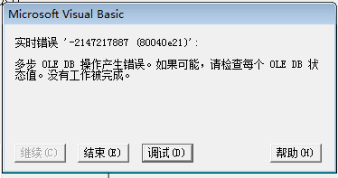
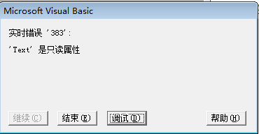
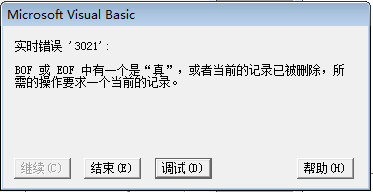
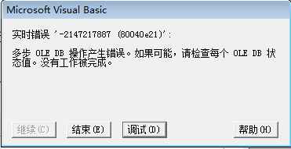

学生信息管理系统完工已经有一段时间了，但是问题却像小草一样，野火烧不尽，春风吹又生。下面我们一起来看看几个常见的问题，这些问题你是否也曾遇到过。
1，对于文本框的内容是否设置了字符长度
由于数据库中的内容有长度限制，那么当我们在文本框中不做任何操作时，会出现这样的提示

2，没有查询结果时，是否注意了要弹出提示
在做学生信息管理系统时，查询信息你是否注意到了呢？如果你是用户，当你查询结果时，它时时不出来，是没有信息呢，还是仍在加载？所谓全心全意为人民服务就是要我们设身处地的为用户着想。
3，选择列表框：需要选择的内容是否还可以输入
对于下拉列表框的使用，不是我们不会，只是我们没有去思考，理所当然的认为只要功能实现，我们就大功告成了，如果是这样我们就大错特错了，不是都说细节决定成败，当然现在还不至于那么严重，只是会告诉你不合格，继续改而已，但是任何习惯的养成都是我们日常点滴的积累，如果平时都不去注意，那么你想如何成为一名优秀的程序员呢？
当然在设置过程中，还出现了一段小插曲，我们知道，列表框的Style属性是设计时属性，那么如果我们将它改成只读的，那么当修改时，需要从数据库读出数据显示的时候就会提示我们错误

对于这个问题，我们也想到了一个好玩的方法解决，来看一下这段代码，嘿嘿！
Private Sub ComGra_KeyPress(KeyAscii As Integer)
KeyAscii = 0 '不允许用户输入
End Sub
4，当表中没有任何记录
我们先来看看它的错误提示

对于这个问题，一种方法我们可以添加错误处理，另一种方法即在显示窗体前加如下代码
Private Sub modifycoursemenu_Click()
Dim txtsql As String
Dim msgtext As String
Dim mrc As ADODB.Recordset
txtsql = "select * from course_info "
Set mrc = executesql(txtsql, msgtext)
If mrc.EOF And mrc.BOF Then
MsgBox "数据为空，请先添加数据", vbOKOnly + vbExclamation, "警告"
Exit Sub
Else
frmmodifycourseinfo.Show
End If
End Sub
5，多次点击修改更新时，是否出错
我们先来看一下出现这个问题的原因，错误代码
Dim txtsql As String
Dim msgtext As String
Dim mrcc As ADODB.Recordset
mrc.Delete '删除以前的那个表，然后重新输入，更新
txtsql = "select *from class_info where class_no= ' " & Trim(TxtNum.Text) & " '"
Set mrcc = executesql(txtsql, msgtext)
If mrcc.EOF = False Then
'mrcc的作用主要是查找注册表里是否还存在着重新输入的内容
MsgBox "输入班号重复，请重新输入", vbOKOnly + vbExclamation, "警告"
TxtNum.SetFocus
mrcc.Close
Else
mrcc.Close '不存在的话，就将输入的内容添加到mrc中
mrc.AddNew
mrc.Fields(0) = Trim(TxtNum.Text)
mrc.Fields(1) = Trim(ComGra.Text)
mrc.Fields(2) = Trim(TxtTec.Text)
mrc.Fields(3) = Trim(TxtGra.Text)
mrc.Update
MsgBox "修改班级信息成功", vbOKOnly + vbExclamation, "警告"
Call ViewData
Frame2.Enabled = True
TxtNum.Enabled = False
ComGra.Enabled = False
TxtTec.Enabled = False
TxtGra.Enabled = False
Frame1.Enabled = True
CmdFir.Enabled = True
CmdPre.Enabled = True
CmdNext.Enabled = True
CmdLast.Enabled = True
mcclean = True
End If
End Sub
在这个过程中，聪明的你不难发现，如果当输入的班号相同时，它就会重复删除两次，提示错误

错误改正，代码如下：
Dim txtsql As String
Dim msgtext As String
Dim mrcc As ADODB.Recordset
Dim update As Boolean
If update = False Then '还未进行过删除
mrc.Delete '删除以前的那个表，然后重新输入，更新
update = True '已经删除了一次
End If
txtsql = "select *from class_info where class_no= ' " & Trim(TxtNum.text) & " '"
Set mrcc = executesql(txtsql, msgtext)
If mrcc.EOF = False Then
'mrcc主要是查找注册表里是否还存在着重新输入的内容
MsgBox "输入班号重复，请重新输入", vbOKOnly + vbExclamation, "警告"
TxtNum.SetFocus
mrcc.Close
Else
mrcc.Close '不存在的话，就将输入的内容添加到mrc中
mrc.AddNew
mrc.Fields(0) = Trim(TxtNum.text)
mrc.Fields(1) = Trim(ComGra.text)
mrc.Fields(2) = Trim(TxtTec.text)
mrc.Fields(3) = Trim(TxtGra.text)
mrc.update
mrc.MoveLast
MsgBox "修改班级信息成功", vbOKOnly + vbExclamation, "警告"
update = False '写回没有删除的状态
Call ViewData
Frame2.Enabled = True
TxtNum.Enabled = False
ComGra.Enabled = False
TxtTec.Enabled = False
TxtGra.Enabled = False
Frame1.Enabled = True
CmdFir.Enabled = True
CmdPre.Enabled = True
CmdNext.Enabled = True
CmdLast.Enabled = True
mcclean = True
End If
End Sub
当然在窗体加载时将update=false，即加载时未进行过删除
以上这些问题都是我们在做系统时，最容易忽视的，也是最常见的，想要作为优秀设计人员，我们要学的不仅仅是一些算法，更不要为了做程序而做程序，在这个过程中，我们要不断的学习和总结，像这样的错误在设计初期就应该避免。
出现这些问题，也告诉我们以后做任何事情都需要有前瞻性，不仅仅是设计软件，在学习和生活中，做事情之前，想一想这件事情会出现什么错误，什么困难，提前避免和处理，让自己的效率得到提高。